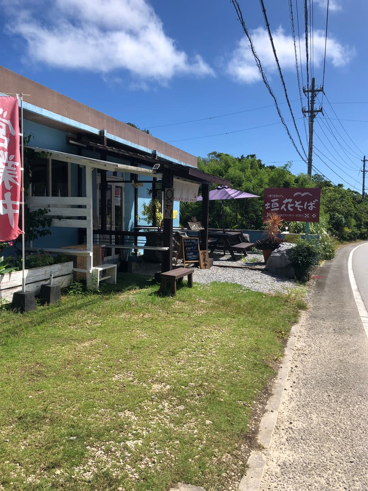
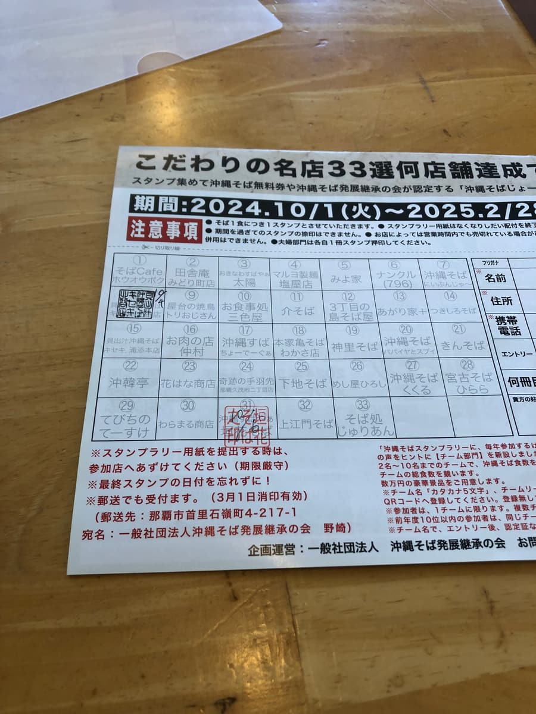
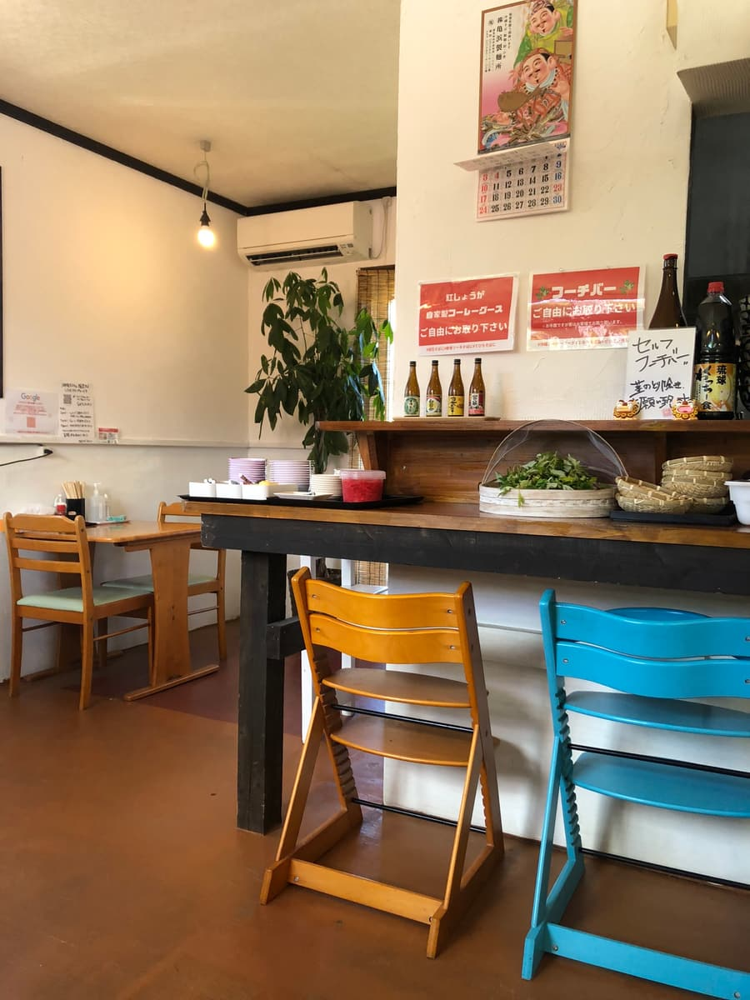
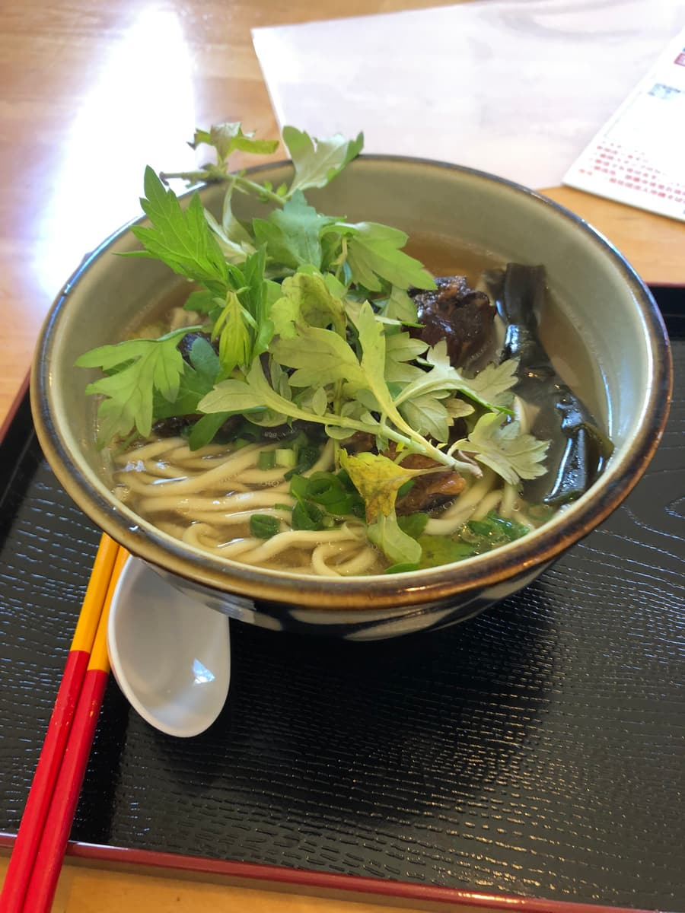
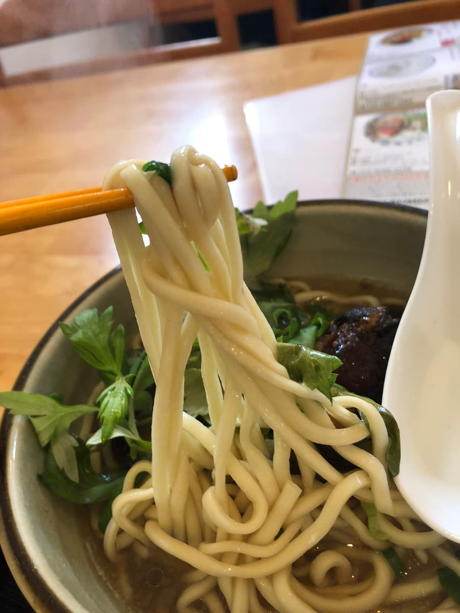

※這篇文章是用 AI（Chat GPT 4o）寫的，我稍微補充了一部分😁
2024年10月吃的😆
造訪了第14屆集章活動（2024.10.1～2025.2.28）參加店「沖繩麵 垣花麵」🌟。


是一家座落在道路旁、氣氛悠閒的店面🏠。
走進店內，自助區備有艾草（Fūchībā），可以免費加料，這是讓人開心的重點✨。

其實想點集章活動手冊上介紹的「垣花麵」，但我是配合開店時間（11點）進去的，被告知「還在備料中」，只好放棄(^0^;)。因此這次吃的是「軟骨排骨麵」🍜。

湯頭是柴魚與豬骨的合併高湯，兩者的風味都能充分感受到，是平衡良好的味道🎣🐷。

接著吃麵。直的圓細麵很軟，做得很好入口。
軟骨排骨充分入味，雖然軟嫩，但還殘留一點筋感🍖。這可能是因人而異的點，我個人如果口感再軟爛一些會更喜歡💭。
另外，加上艾草（Fūchībā）作為配料，會增添清爽的香氣與健康感🌿。這種免費配料的服務，擴展了享用沖繩麵的樂趣呢😊。
評分（9分/15分）：總的來說，沖繩麵 垣花麵的軟骨排骨麵，是味道紮實、穩定的一碗👌。不過沒有感受到特別的驚喜或個性，印象就是普通好吃🤔。這家店就在2024年8月24日開幕的好市多附近，從好市多回程時要不要來吃一次呢😄
麵：★★★☆☆（3）
湯頭：★★★☆☆（3）
配料：★★★☆☆（3）
作為集章活動的其中一家店來訪是十分滿意的內容，下次也想試試其他菜單🎶。